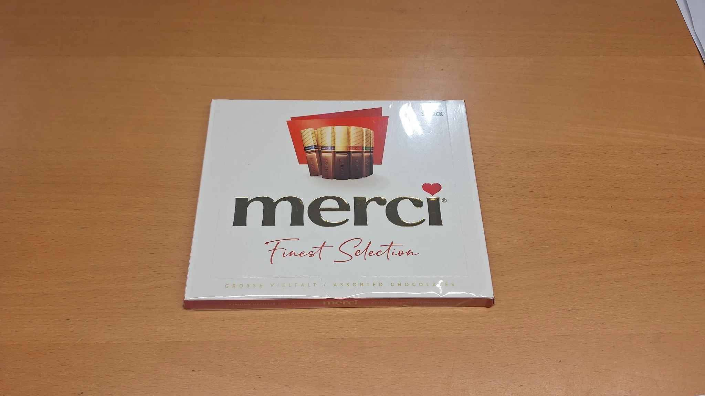

Nieuws van de garage · 5 november 2026
Een kleine attentie, een grote waardering voor ons hele team ❤️
Soms zijn het de kleinste gebaren die de grootste indruk nalaten.
Vandaag werden we bij Garage Peter aangenaam verrast door een trouwe klant die al jarenlang haar wagen aan ons toevertrouwt. Ze bracht een doos Merci-chocolade mee als persoonlijke bedanking voor het volledige team.

Ze vertelde dat ze ons graag eens wilde bedanken voor alles wat we door de jaren heen voor haar wagen hebben gedaan. Vooral onze vriendelijkheid, eerlijkheid, correcte afspraken en betrouwbare service wilde ze hiermee waarderen.
En zo'n compliment doet natuurlijk bijzonder veel deugd!
Garage Peter, dat is teamwork!
Als zaakvoerder ben ik ontzettend blij met deze mooie waardering. Maar ik wil vooral benadrukken dat dit niet alleen mijn verdienste is.
Achter Garage Peter staat een team dat zich iedere dag inzet om onze klanten zo goed mogelijk te helpen. Van onderhoud en herstellingen tot het opsporen van technische problemen en het zoeken naar de juiste oplossingen: iedereen levert zijn bijdrage.
Bedankt voor het vertrouwen! ❤️
Aan onze klant: hartelijk bedankt voor deze lieve attentie en vooral voor het jarenlange vertrouwen.
Aan ons team: bedankt voor jullie dagelijkse inzet en de zorg waarmee jullie iedere wagen behandelen.
Want bij Garage Peter draait het niet alleen om auto's herstellen, maar ook om mensen helpen, eerlijk advies geven en afspraken nakomen.
En dat blijven we met veel plezier doen!
Peter & het volledige team van Garage Peter 🔧🚗
Garage Peter · Brugsesteenweg 51B · 8450 Bredene
info@garagepeter.be